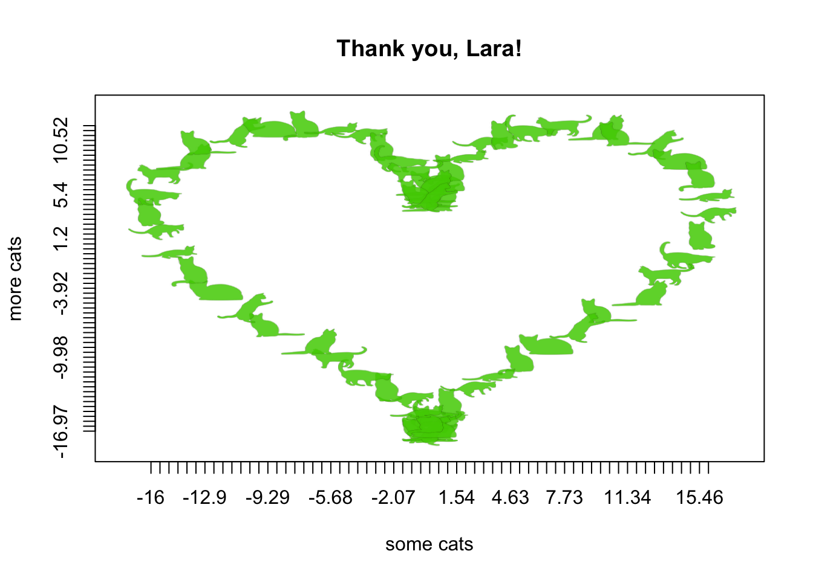

Lara Harmon has put in countless hours to build and uplift the ASA Student community. We are SO grateful. We know she loves cats, as evidenced by
On the off-chance you have not felt judged by a cat today, my cat can help you out. pic.twitter.com/sApgbyYztD
— Lara Harmon (@Amstat_Lara) December 27, 2016
and
You'll notice that we have yet to be in a city where I can convince our design team cats would be 100% on-theme. /life goals
— Lara Harmon (@Amstat_Lara) January 24, 2017
and
Stats Cat's back from her first business trip. Looks about as jetlagged as I am! #JMM17 pic.twitter.com/JLzSbMKj3I
— Lara Harmon (@Amstat_Lara) January 10, 2017
so we decided to write her an appropriate thank you note, using CatterPlots.
If you haven’t installed this purrrrfect package, do the following:
devtools::install_github("Gibbsdavidl/CatterPlots")library('CatterPlots')Stack Overflow taught me how to plot a heart in R (perhaps they will be the subject of my next thank you note):
t=seq(0, 2*pi, by=0.1)
xhrt <- function(t) 16*sin(t)^3
yhrt <- function(t) 13*cos(t)-5*cos(2*t)-2*cos(3*t)-cos(4*t)
y=yhrt(t)
x=xhrt(t)Thank you, Lara! We appreciate you!
meow <- multicat(xs=x, ys=y,
cat=c(1,2,3,4,5,6,7,8,9,10),
catcolor=list(c(.31,.81,0,.85)),
canvas=c(-0.1,1.1, -0.1, 1.1),
xlab = "some cats",
ylab = "more cats",
main="Thank you, Lara!")